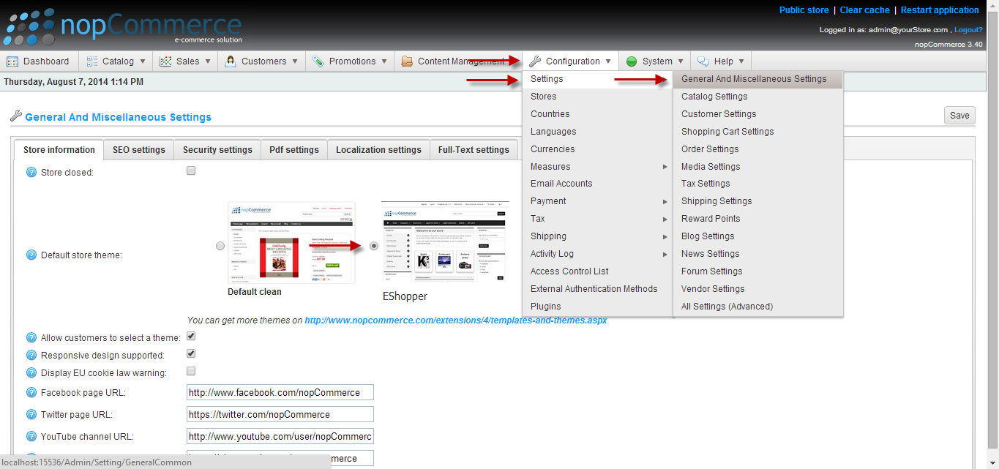

This is a step by step guide on how to install Eshopper as your NopCommerce theme.
To install Eshopper you must first have nopcommerce. Here's the official nopcommerce website http://www.nopcommerce.com/
Then you have to download the Eshopper theme. It is a free theme available to NopCommerce users. Here is the download link of EShopper http://www.demo_link_Eshopper
Here is a screen shot for your ease.

You are ready to go!!
Customize color:
For versatility, we have made the Eshopper theme in six colors. Users can use any of these six colors, and if he wishes, he can use his own color coding. He just have to replace the color code in any css file from Eshopper\Content\color-styles and edit \Eshopper\Views\Shared\Head.cshtml file to use that specific css file.
If you want to use one of the four given color which comes along with the Eshopper theme, you just have to go \EShopper\Views\Shared\Head.cshtml and there you will find the necessary instruction to activate each color. You just have to comment/uncomment.
Customize logo:
Ofcourse you want to or have to use your own logo in your own site. Using your own logo is pretty easy task. You don't have to change any code. Just go to Presentation\Nop.Web folder of your NopCommerce site and change the favicon.ico file with your own logo.
Note: You must name your logo file favicon and it must be in ico format. Otherwise you will not be able to use that logo in the theme.
Here's some frequently asked questions-
Question: How do I customize the color of the theme?
Answer: Eshopper theme is available in 6 colors. To change color go to Presentation\Nop.Web\Themes\EShopper\Views\Shared\Head.cshtml. There you can get the necessary instructions about picking diffrerent colors.
Question: How do i use the theme?
Answer: Download the Eshopper.zip folder. Extract it and put the Eshopperfolder in your Presentation\Nop.Web\Themes directory. Go to the admin panel and go to Configuration>Settings>General and Miscellaneous Settings. Set the Eshopper theme as Desktop store theme. It will set Eshopper as your default NopCommerce theme. You can also select the theme from theme selector at the bottom of the page.
Question: Where should I put the NopRoot folder?
Answer: After downloading, extract the zip file with your favourite extractor. Then put the Eshopper folder in your Presentation\Nop.Web\Themes folder.